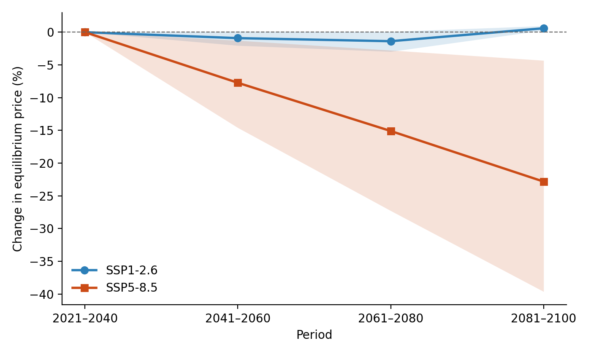

Reproduction materials
Wetter conditions raise the price of a right where they fall and lower it next door. Read in reverse: drought devalues the entitlement locally, and the two channels largely cancel when a whole region dries at once.
Prices track precipitation accumulated over twelve months. The three- and six-month windows give coefficients indistinguishable from zero, so the accumulation scale is itself a finding rather than a modelling detail.
Drought lowers the value of a water right. Where an entitlement is nominal and its exercise depends on physical availability, scarcity reduces the water attached to the right rather than bidding up its price.
A water scarcity decree in the previous month raises prices by about half, several times the magnitude of any climate variable in the model. The market responds to the declaration of scarcity more than to scarcity itself.
Prices transmit between basins with a lag rather than simultaneously, and mining presence in adjacent basins moves prices roughly eight times more than mining within the basin itself.

git clone https://github.com/horaciosamaniego/chile-water-rights-scarcity.git
cd chile-water-rights-scarcity
pip install -r requirements.txt
python run_all.pyUnder two minutes on a laptop. The Monte Carlo draws are seeded, so a correct run reproduces the published figure exactly — a useful check that the environment is sound.
| Path | Contents |
|---|---|
| src/wr_spatial_corrected.py | Builds the drought index and the spatial weight matrix, estimates both spatial specifications, tests one against the other, reports the effects decomposition |
| src/wr_projection.py | Delta-change bias correction, projected drought index, long-run equilibrium solution, uncertainty propagation |
| src/make_figure.py | Draws the projection figure |
| data/ | Transaction panel, catchment precipitation 1979–2020, MIROC6 scenario precipitation |
| output/ | Console results, regenerated by the run above |
Sixty percent of basin-months record no transaction, and a price can only be observed when a trade occurs, so the price series carries values forward across gaps. This inflates estimated persistence. The paper reports the coefficient on three progressively stricter subsamples rather than leaving the issue implicit.
The transaction panel contains a column named spi. It is superseded and should not be used: it was produced by a routine that fitted a distribution to the year index rather than to precipitation. The analysis recomputes the index from the precipitation record, following McKee et al. (1993) with Thom's correction for months of zero rainfall.
Basins 43 and 55 appear in the transaction panel but have no precipitation record, so the analysis runs on fifteen basins.